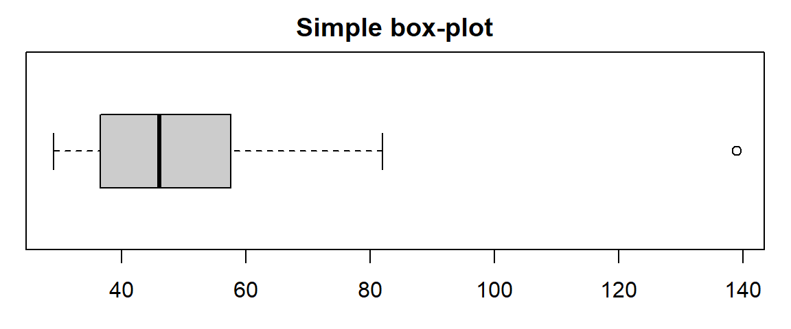
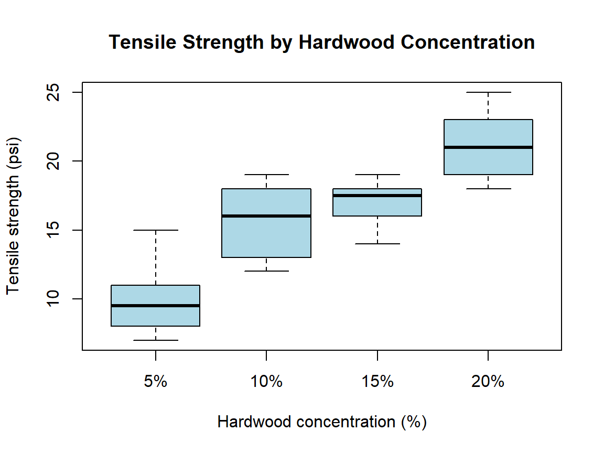

3 Partition values (quantiles)
Common partition values are:
- Percentiles
- Quartiles
- Deciles
3.1 Percentiles
Percentiles are 99 values which divide a data set into approximately 100 equal parts. There are 99 percentiles, normally denoted as:
\[P_{1}, P_{2}, \dots, P_{25}, \dots, P_{50}, \dots, P_{75}, \dots, P_{99}\]
3.1.1 A) Formula for Computing \(j^{\text{th}}\) Percentile from Raw / Ungrouped Data
\[P_{j} = j^{\text{th}}\text{ Percentile} = \left[ j \times \frac{(n+1)}{100} \right]^{\text{th}}\text{ value}\]
Example 3.1 Ten-count tests made on a certain yarn have shown the following results:
22.8, 23.2, 22.9, 22.6, 23.4, 23.0, 23.1, 23.0, 22.9, 23.0
Compute \(P_{25}\) and \(P_{50}\).
3.1.1.1 Solution
Here, \(n = 10\).
Arranged data:
22.6, 22.8, 22.9, 22.9, 23.0, 23.0, 23.0, 23.1, 23.2, 23.4
Computing \(P_{25}\):
\[ \begin{aligned} P_{25} &= \left[ 25 \times \frac{(10+1)}{100} \right]^{\text{th}}\text{ value} = 2.75^{\text{th}}\text{ value} \\ &= 2^{\text{nd}}\text{ value} + 0.75 \times (3^{\text{rd}}\text{ value} - 2^{\text{nd}}\text{ value}) \\ &= 22.8 + 0.75 \times (22.9 - 22.8) = 22.875 \end{aligned} \]
Computing \(P_{50}\):
\[ \begin{aligned} P_{50} &= \left[ 50 \times \frac{(10+1)}{100} \right]^{\text{th}}\text{ value} = 5.5^{\text{th}}\text{ value} \\ &= 5^{\text{th}}\text{ value} + 0.5 \times (6^{\text{th}}\text{ value} - 5^{\text{th}}\text{ value}) \\ &= 23.0 + 0.5 \times (23.0 - 23.0) = 23.0 \end{aligned} \]
3.1.2 B) Formula for Computing \(j^{\text{th}}\) Percentile from Grouped Data / Frequency Distribution
\[P_{j} = L_{0} + \frac{c}{f} \left( \frac{N}{100} \times j - \text{p.cf} \right)\]
Where:
- \(L_{0} = \text{Lower limit of the } j^{\text{th}} \text{ percentile class}\)
- \(c = \text{Class interval of the } j^{\text{th}} \text{ percentile class}\)
- \(f = \text{Frequency of the } j^{\text{th}} \text{ percentile class}\)
- \(\text{p.cf} = \text{Cumulative frequency of the class preceding the percentile class}\)
Example 3.2 The following data are related to the linear density of yarn:
| Linear density | 13.00–13.25 | 13.25–13.50 | 13.50–13.75 | 13.75–14.00 | 14.00–14.25 | 14.25–14.50 | 14.50–14.75 |
|---|---|---|---|---|---|---|---|
| No. of tests | 8 | 12 | 20 | 25 | 22 | 10 | 4 |
Compute and explain \(P_{50}\) and \(P_{75}\).
3.1.2.1 Solution
First, we compute the cumulative frequency (\(cf\)):
| Linear density | Frequency (\(f\)) | Cumulative Frequency (\(cf\)) |
|---|---|---|
| 13.00–13.25 | 8 | 8 |
| 13.25–13.50 | 12 | 20 |
| 13.50–13.75 | 20 | 40 |
| 13.75–14.00 | 25 | 65 |
| 14.00–14.25 | 22 | 87 |
| 14.25–14.50 | 10 | 97 |
| 14.50–14.75 | 4 | 101 |
| Total | \(N = 101\) |
Finding \(P_{50}\):
To locate the \(50^{\text{th}}\) percentile class, compute:
\[\frac{N}{100} \times 50 = \frac{101}{100} \times 50 = 50.5\]
The cumulative frequency just greater than \(50.5\) is \(65\).
So, 13.75–14.00 is the \(50^{\text{th}}\) percentile class.
\[ \begin{aligned} P_{50} &= L_{0} + \frac{c}{f} \left( \frac{N}{100} \times 50 - \text{p.cf} \right) \\ &= 13.75 + \frac{0.25}{25} \times (50.5 - 40) \\ &= 13.855 \end{aligned} \]
Interpretation:
This means 50% of the 101 observations (i.e., \(50\% \times 101 = 50.5 \approx 51\) observations) have a linear density lying at or below \(13.855\).
(Try computing \(P_{75}\) yourself as practice.)
3.2 Quartiles
Quartiles are 3 values that divide a data set into approximately 4 equal parts:
- \(Q_{1}\) (\(1^{\text{st}}\) quartile / lower quartile)
- \(Q_{2}\) (\(2^{\text{nd}}\) quartile / median)
- \(Q_{3}\) (\(3^{\text{rd}}\) quartile / upper quartile)
Note that:
- \(Q_{1} = P_{25}\)
- \(Q_{2} = P_{50} = \text{Median}\)
- \(Q_{3} = P_{75}\)
3.2.1 Formula for Raw Data
\[Q_{j} = \left( j \times \frac{n+1}{4} \right)^{\text{th}}\text{ value}, \quad \text{for } j = 1, 2, 3\]
Example 3.3 Find \(Q_{1}\), \(Q_{2}\), and \(Q_{3}\) for the following data representing CPU time of 11 jobs (in seconds):
59, 139, 46, 37, 42, 30, 55, 56, 36, 82, 29
3.2.1.1 Solution
Here, \(n = 11\).
Sorted data:
29, 30, 36, 37, 42, 46, 55, 56, 59, 82, 139
\[ \begin{aligned} Q_{1} = P_{25} &= \left( 1 \times \frac{11+1}{4} \right)^{\text{th}}\text{ value} = 3^{\text{rd}}\text{ value} = 36 \\ Q_{2} = P_{50} &= \left( 2 \times \frac{11+1}{4} \right)^{\text{th}}\text{ value} = 6^{\text{th}}\text{ value} = 46 \\ Q_{3} = P_{75} &= \left( 3 \times \frac{11+1}{4} \right)^{\text{th}}\text{ value} = 9^{\text{th}}\text{ value} = 59 \end{aligned} \]
3.2.2 Interquartile Range (IQR)
The Interquartile Range is the difference between the third quartile (\(Q_{3}\)) and the first quartile (\(Q_{1}\)):
\[\text{IQR} = Q_{3} - Q_{1}\]
Exercise 3.1 (Question on Interpretation) In a class of 40 students, mid-term test marks were collected and \(P_{20}\) was found to be 23.
- What does \(P_{20} = 23\) mean?
- Approximately how many students received a score of 23 or less?
Answer:
\(P_{20} = 23\) means that 20% of the students scored 23 or fewer marks.
Number of students scoring 23 or less = \(40 \times 20\% = 8\) students.
3.3 Box-Plots and the Five-Number Summary
Five-Number Summary
The minimum, first quartile (\(Q_1\)), median (\(Q_2\)), third quartile (\(Q_3\)), and maximum, taken together, are referred to as the five-number summary of a data set.
3.3.1 Box-and-Whisker Plot
A box-plot (or box-and-whisker plot) is a chart used in exploratory data analysis to visually display the distribution of numerical data and its skewness through the five-number summary.
3.3.2 Significance of a Box-Plot
- Provides a quick visual summary of data distribution.
- Shows the central tendency from the line inside the box (Median).
- Displays total spread (Minimum to Maximum) as well as middle 50% spread (\(\text{IQR} = Q_3 - Q_1\)).
- Gives clear indications about the skewness/shape of the distribution.
3.3.3 Parallel / Comparative Box-Plots
Box-plots are frequently used to compare multiple groups or populations side-by-side using the same scale.
3.3.4 Example: Tensile Strength of Paper
(Adapted from D.C. Montgomery, Applied Statistics and Probability for Engineers)
A paper manufacturer wants to improve product tensile strength. Engineering tests four levels of hardwood concentration in paper pulp: 5%, 10%, 15%, and 20%. Six test specimens are prepared at each concentration level.
3.3.4.1 Data Table
| Hardwood Conc. (%) | Obs 1 | Obs 2 | Obs 3 | Obs 4 | Obs 5 | Obs 6 | Totals | Averages |
|---|---|---|---|---|---|---|---|---|
| 5% | 7 | 8 | 15 | 11 | 9 | 10 | 60 | 10.00 |
| 10% | 12 | 17 | 13 | 18 | 19 | 15 | 94 | 15.67 |
| 15% | 14 | 18 | 19 | 17 | 16 | 18 | 102 | 17.00 |
| 20% | 19 | 25 | 22 | 23 | 18 | 20 | 127 | 21.17 |
| Overall | 383 | 15.96 |

3.3.4.2 Interpretation
- Effect on Strength: Increasing hardwood concentration consistently increases mean and median tensile strength.
- Symmetry & Variability: Distribution across levels is relatively symmetric, and dispersion/variability does not drastically change across treatment groups.
3.4 Exercises
- Daily Wages: Find the \(3^{\text{rd}}\) quartile and \(60^{\text{th}}\) percentile for the following distribution of daily wages of temporary workers, and comment on the results:
| Daily wages (Rs) | 40–49 | 50–59 | 60–69 | 70–79 | 80–89 |
|---|---|---|---|---|---|
| No. of workers | 15 | 20 | 30 | 45 | 25 |
- Fabric Strength: Calculate the \(3^{\text{rd}}\) decile (\(D_3\)), \(2^{\text{nd}}\) percentile (\(P_2\)), and \(70^{\text{th}}\) percentile (\(P_{70}\)):
| Fabric strength | 45–49 | 50–54 | 55–59 | 60–64 | 65–69 | 70–74 |
|---|---|---|---|---|---|---|
| No. of samples | 5 | 10 | 15 | 20 | 10 | 5 |
- Coefficient of Variation (CV%): Calculate \(Q_1\) and \(P_{70}\) for the following data and comment on them:
| CV% | 3.0–3.5 | 3.5–4.0 | 4.0–4.5 | 4.5–5.0 | 5.0–5.5 |
|---|---|---|---|---|---|
| No. of tests | 25 | 4 | 10 | 16 | 10 |
- Goods Weight: Compute the Median and \(38^{\text{th}}\) percentile (\(P_{38}\)) for the following data:
| Weight (kg) | 10–19 | 20–29 | 30–39 | 40–49 | 50–59 | 60–69 |
|---|---|---|---|---|---|---|
| No. of goods | 6 | 10 | 16 | 14 | 8 | 4 |
- Yarn Unevenness (U%): Compute the \(1^{\text{st}}\) quartile (\(Q_1\)), \(7^{\text{th}}\) decile (\(D_7\)), and \(38^{\text{th}}\) percentile (\(P_{38}\)) for the following raw measurements:
2.25, 4.25, 2.65, 3.85, 5.82, 3.42, 4.44, 2.86, 2.88, 4.46
- Loom Comparison: A textile company measures fabric strength (psi) across 2 randomly selected looms:
| Loom | Measurements |
|---|---|
| A | 99, 97, 97, 96, 97, 96, 92, 98 |
| B | 94, 95, 90, 92, 93, 94, 90, 92 |
- Construct a parallel/comparative box-plot comparing fabric strength for Loom A and Loom B.
- Based on the box-plot, which loom produces better fabric in terms of strength? Which loom exhibits lower variability?